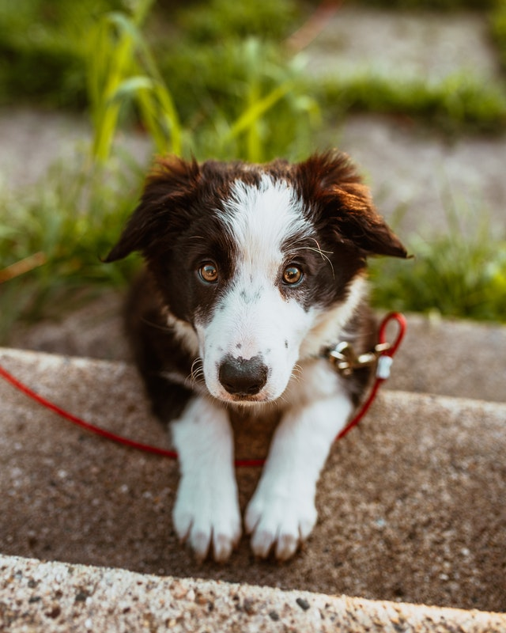

Iraildes Silva

A ONG AnimaPet é uma organização que oferece instruções de como criar e adotar um pet. A AnimaPet promove eventos de adoção de pets e arrecadação de doações para serem redirecionadas aos animais que vivem em canis ou nas ruas. O intuito do nosso trabalho é: Tirar duvidas sobre adoções e doações. Divulgar ONGS e sites que procuram ajudar animais abandonados. Compartilhar noticias sobres os Pets. Instruir nossos leitores a como cuidar dos seus Pets.

Empresa criada para auxiliar em doações e adoções de PETS
Laboratório construído para tratamentos específicos
Hospital veterinário de Capivari
Se você deseja adotar um pet e contribuir com nosso trabalho de continuar resgatando animais. Por favor marque um visita na nossa instituição, tanto para adotar ou mesmo fazer carinho nos animais entre em contato por onde preferir. Na maior parte das vezes, resgatamos animais que foram abandonados ou sofreram maus-tratos. Portanto, eles serão muito mais carinhosos com seus donos, desenvolvendo um grande senso de fidelidade e gratidão. Agradecemos dês de já.
O Animapet me deu muito apoio e informações quando eu queria adotar um cachorrinho. Hoje faz uma semana que a Mel faz parte da minha vida e eu não poderia estar mais feliz.
Conheci o AnimaPet através da indicação de amigos. Eles me deram muito apoio depois que decidi adotar o Joaquim, no começo não sabia nada de gatos, e me ajudaram de mais.
Os serviços do AnimaPet são muito bons, através da ajuda deles finalmente decidi adotar o Thor, foi uma das melhores escolhas que eu tomei, me sinto muito mais feliz e acolhido.
Entre em contato com a gente, para adotar ou fazer alguma doação